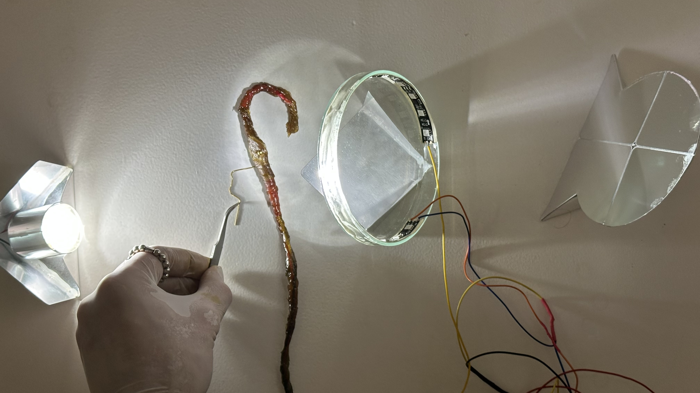
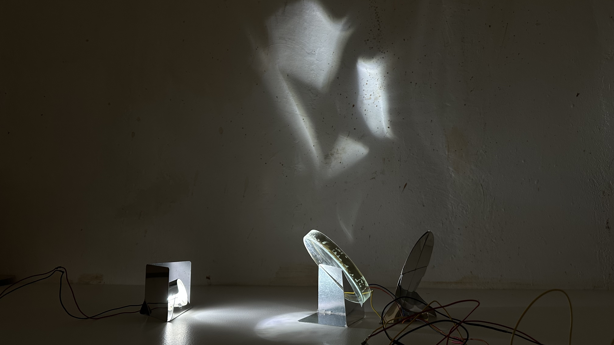
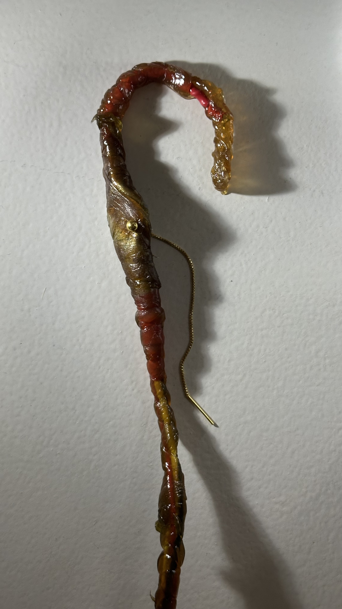

This week felt like an encounter between ambition and friction. I began with a vision of building an intelligent, agentic system that could read the electrical noise of a pulse sensor and interpret it through an AI layer. I imagined a device that wouldn’t simply display biometric data, but would translate it into atmosphere.
The idea emerged from my ongoing research on domestic anti-curation. I am interested in homes that respond to presence rather than optimize behavior. Not smart homes that manage you, but spaces that acknowledge you. AURA was conceived as a system where your nervous system subtly shapes the room.
At first, I assumed interpretation was necessary for meaning. Raw BPM data felt insufficient. The AI agent would categorize emotional states — calm, anxious, excited — and decide how the environment should respond. Mediation felt conceptually sophisticated.
But infrastructure pushed back. The MCP server worked briefly, then collapsed under unstable network conditions. Cloudflare tunnels dropped. Authentication failed. I spent hours trying to stabilize connections before realizing the issue wasn’t code — it was architecture. Agentic AI systems depend on stable infrastructure. Without it, intelligence evaporates.
At the same time, the pulse sensor revealed another tension. Biological signals require continuous, high-frequency sampling. AI agents operate in query-time. The temporalities did not align. I was trying to interpret life through fragmented requests.

By the third morning, we made the decision to remove the AI layer entirely. That moment carried a moral trace for me. The agent architecture had been my contribution. Letting it go meant choosing the project over ownership.
The system became radically simple: pulse sensor → Pico → LED strip. Direct translation. No categorization. No cloud.
And unexpectedly, that simplicity felt stronger. The LED pulses in exact rhythm with your heartbeat. It doesn’t interpret you. It doesn’t optimize you. It simply mirrors you.
Technically, the process was far from simple. The sensor was extremely sensitive to light and pressure. I implemented adaptive baseline tracking, hysteresis-based contact detection, and inter-beat smoothing to stabilize BPM readings. The code is tuned rather than elegant. But embodiment is never clean data.

Originally, we wanted to translate pulse into electromagnetic fields. But field strength was too weak. We pivoted to light. That shift changed the affective quality of the project. Magnetic fields are infrastructural and invisible; light is atmospheric and relational.
What remains is a question made physical: What if your home knew your heartbeat — not to judge or optimize, but simply to glow with you?
Related Links
Group Documentation on Hackster